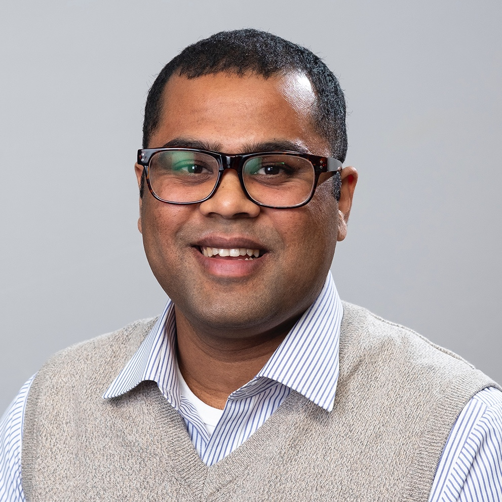

Akshika Wijesundara
PhD Candidate in Computer Science | Founder & Chairperson of SEF
Ex-Google Student Ambassador
I am a PhD candidate in the School of Computing and Communications at the Open University, the United Kingdom where my supervisors are Professor Arosha Bandara, Professor Blaine Price and Professor Bashar Nuseibeh. I am also part of the SEAD group and the STRETCH project group.
My primary research interests are in human-computer interaction and software engineering. My PhD’s main research question is How can Smart Home interfaces be engineered to adapt their configuration and behaviour to preserve privacy between users in multi user contexts?, where I am focusing on adaptive user interfaces, user modelling, privacy in cyber-physical systems and applied machine learning.
Prior to my PhD, I worked as a Software Engineer at Cambio Software Engineering (2016/17) and I was a Google Summer of Code Mentor (2017) for OpenMRS. I completed my B.Sc in Computer Science and Engineering at the University of Moratuwa, Sri Lanka. During my B.Sc I was a Google Summer of Code Intern (2016) and a Google Student Ambassador (2014/15/16). I also interned as a Research Engineering intern at Augmented Human Lab of SUTD-MIT International Design Centre (2014).
Apart from my core-research work, I have founded a not-for-profit organisation, Sustainable Education Foundation (SEF) to empower Sri Lankan students and the education system.
Email: akshika [DOT] wijesundara [AT] open [DOT] ac [DOT] uk